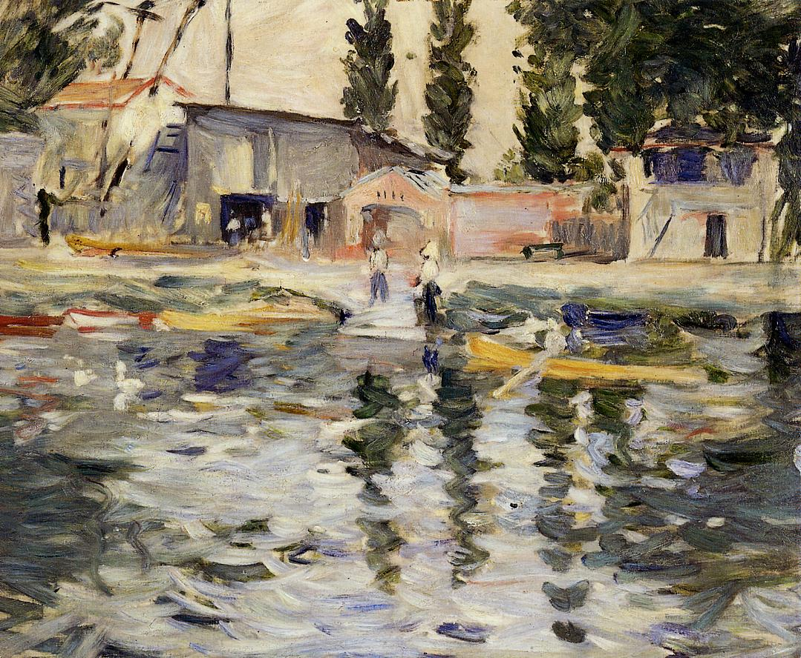

Tags: houses-and-buildings, boats-and-ships
Style: Impressionism
Artist: Morisot Berthe
Title: The Seine at Bougival
Year: 1884
Genre: landscape
Categories: castle (43.1%); monastery (34.5%); church (7.4%); jigsaw_puzzle (2.3%); palace (1.9%)